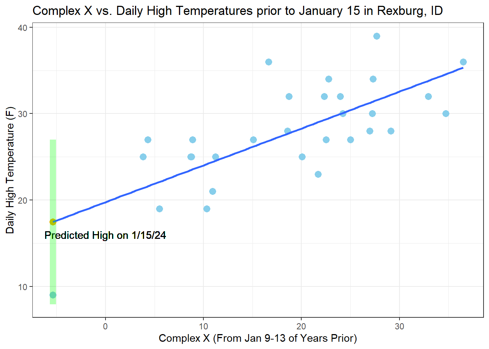
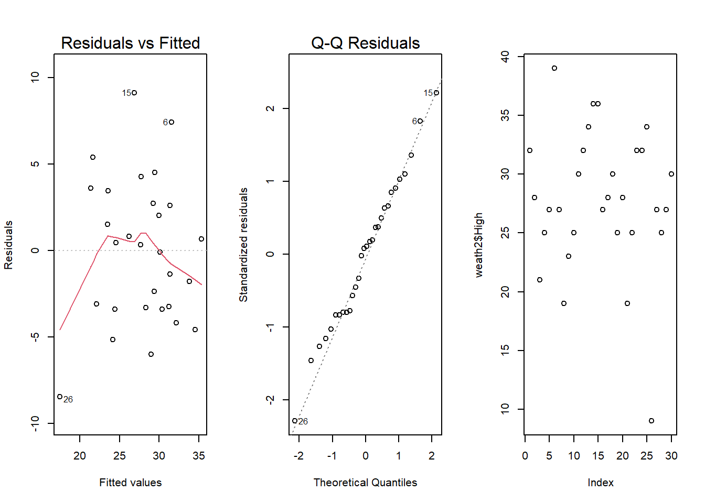

Using historical weather data from Rexburg, a linear model was created to predict the daily high temperature on Jan. 15, 2024. The created model predicted that the high on said day would be 17.46 degrees. Below is a table of the confidence interval for the High Temperature on that day, with us being 95% confident that the High temperature will be within that interval.
Below shows a complete graph of the data, as well as the predicted temperature for 1/15/24.
pander(predict(lm_2, data.frame(Metric = -5.387), interval = "prediction"))| fit | lwr | upr |
|---|---|---|
| 17.46 | 7.939 | 26.99 |

Data was collected from this website. The data used was collected from 2019-2024, using the 2-6 days prior to the date in question. The 6 hour assessments were used (average wind speed and direction over 6 hour spans every day). Barometric pressure taken was the lowest pressure on that day, and humidity being the highest on that day. The wind directions are the distance from the SW direction on 16-point compass (SW being 0, SSW being 1, NE being 8, etc.), due to southwestern winds being known to cause more warmth. Sky readings are 0 and 1, with 0 being clear and 1 being cloudy.
The Complex X Variable was calculated as follows: \(\frac{\text{High}}{15} + \text{Low} + \frac{Max(\text{Wind Direction}) * Max(\text{Wind Speed)}}{\text{Barometric Pressure} * \frac{\text{humidity}}{50}}\)
The true regression model for the situation is given by
\(\underbrace{Y_i}_{\text{Actual High Temperature}} = \beta_0 + \beta_1 \underbrace{X_i}_{Complex Variable} + \epsilon_i \text{ where } \epsilon_i \sim N(0, \sigma^2)\)
A test will now be performed to examine if there is a significant relationship between the complex x variable and the high temperature on a day in January. A significance level of \(\alpha = 0.05\) will be used for this test.
\(H_0: \beta_1 = 0\) \(H_a: \beta_1 \neq 0\)
Because the explanatory variable is somewhat arbitrary, \(\beta_0\) will not be considered in these tests.
The table below shows the results of the test.
| Estimate | Std. Error | t value | Pr(>|t|) | |
|---|---|---|---|---|
| (Intercept) | 19.76 | 1.623 | 12.18 | 1.055e-12 |
| Metric | 0.4264 | 0.07649 | 5.574 | 5.79e-06 |
| Observations | Residual Std. Error | \(R^2\) | Adjusted \(R^2\) |
|---|---|---|---|
| 30 | 4.2 | 0.526 | 0.5091 |
As can be seen, the p-value for the slope of our metric is extremely low. It is much lower, in fact than our significance level of 0.05. This suggests that there is a statistically significant relationship between our complex x variable and the high temperature of a day in January.
To check the validity of the results, we examine several diagnostic plots:

As can be seen above, there is no apparent pattern in the Residuals vs. fitted and the data appears to be somewhat linear, although the averages look somewhat suspect. For our purposes, we will say that the assumptions of a linear relationship an constant variance are met.
Our Q-Q Plot also is fairly linear, so we say that the assumption of normally distributed errors is met. Finally, we will assume that x-values are measured without error.
Below shows the equation for the fitted regression model.
\(\underbrace{\hat{Y}_i}_{\text{ Predicted High Temperature}} = 19.76 + .4264 \underbrace{X_i}_{Complex Variable}\)
Based on the fitted model, a 1 unit change in our complex x variable results in a change of .4264 degrees Fahrenheit on the average High Temperature.
An \(x\) value of -5.387 was used to predict the temperature on 1/15, as -5.387 was the x-value of the calculations of data from two days prior. We would then compute the predicted temperature as:
\(19.76 + .4264 * (-5.387) = 17.46\).